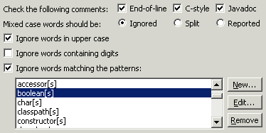
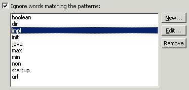
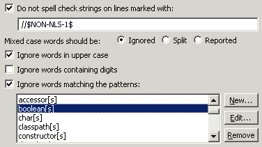

Audit - Rules - Spell CheckingDescription This group contains audit rules that check for spelling errors within portions of the code base.A predefined "Spelling" audit rule set is provided that is directly accessible via the Check Spelling command. Each of the spell checking rules provides a number of common resolutions (quick fixes). If the spelling engine can determine good possible matches, the first four will be presented directly.
An additional option is provided to open a dialog to enter any arbitrary replacement text. Clicking the Add button will add the user suggestion to the dictionary.
|
| Rules: |
Summary Comments should be spelled correctly. Description This audit rule finds comments that contain misspelled words.

Summary Identifiers should be composed of valid words. Description This audit rule finds identifiers that are composed from pieces that do not form words.

Summary String literals should be correctly spelled. Description This audit rule finds string literals that contain misspelled words.
